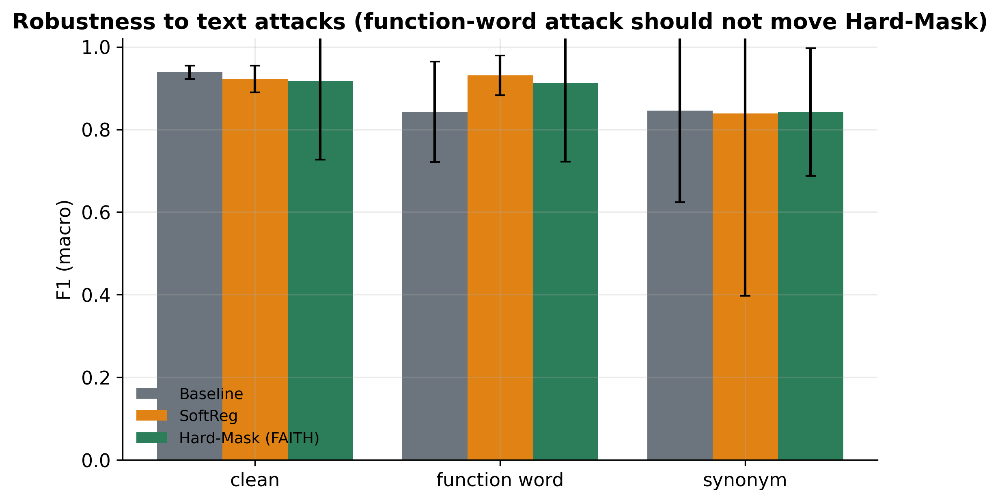
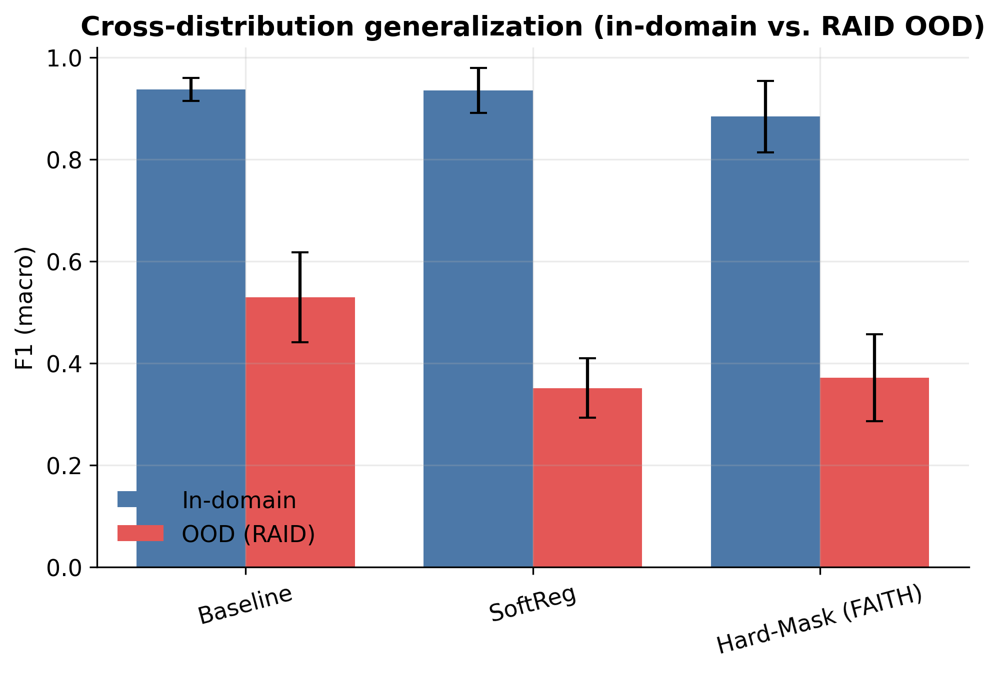
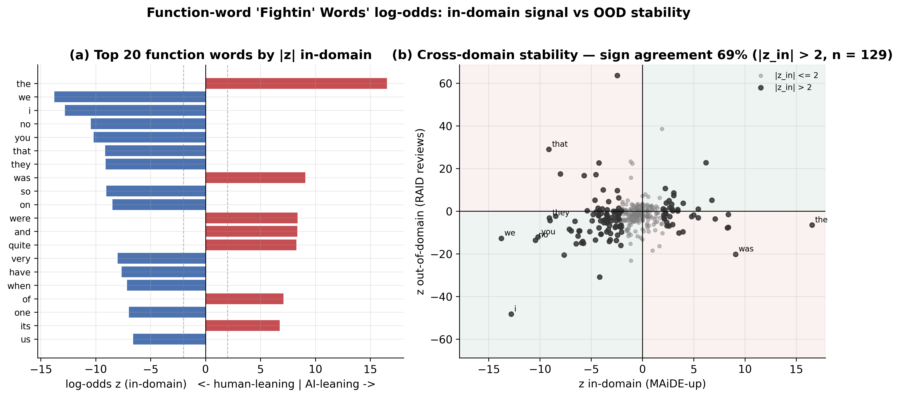
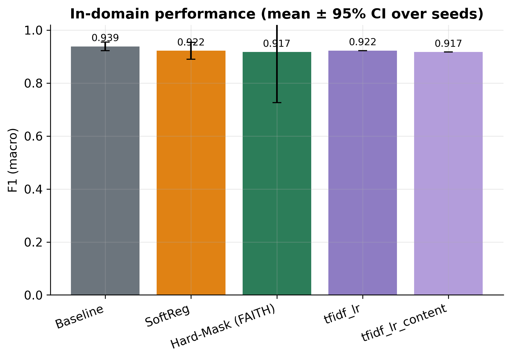
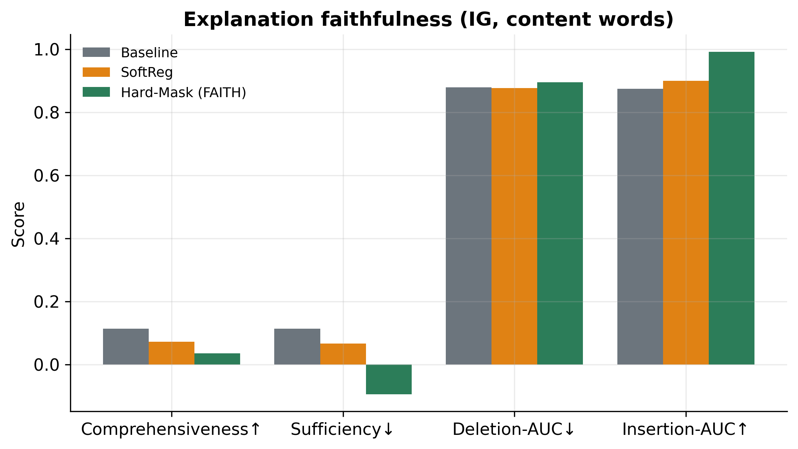
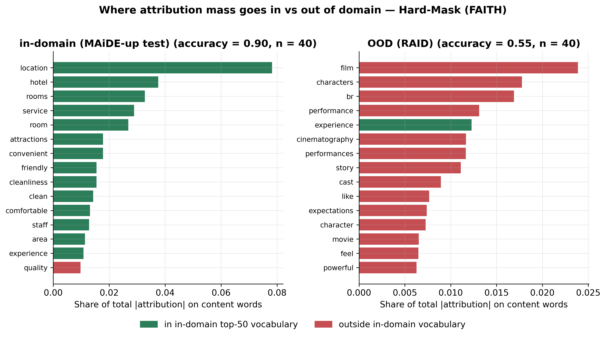
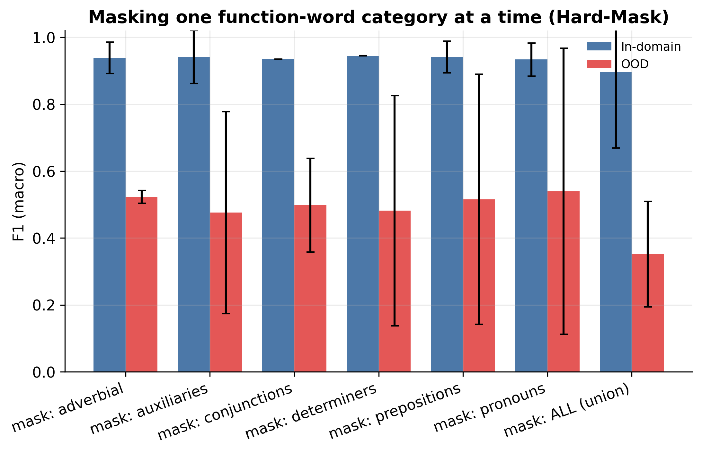

Summary
The question and the probe
Supervised detectors of AI-generated text reach high in-domain accuracy but lean on superficial cues. One such cue is function words — articles, prepositions, conjunctions, auxiliaries, pronouns (a 441-word union lexicon). FAITH-Detect trains three RoBERTa-base variants on MAiDE-up hotel reviews (5 seeds each): a standard Baseline, a Soft-Reg variant that penalises function-word attributions, and a Hard-Mask variant that is architecturally unable to see function words. Integrated-Gradients attributions then verify, rather than assume, what each model uses.
Key findings
- Accuracy is free, invariance is real. Hard-Mask matches the baseline in-domain (macro-F1 0.936 vs 0.937) while its function-word attribution mass is exactly 0.000 (baseline: 0.365 of total attribution).
- Robustness where the invariance predicts it. Under a function-word substitution attack the baseline drops to 0.872; Hard-Mask stays at 0.958 with the tightest CI of any cell.
- The price is paid out of domain. On RAID review-domain transfer the baseline reaches 0.695; Hard-Mask falls to 0.474 — function-word statistics are part of what transfers.
- The price is recoverable. Few-shot adaptation of Hard-Mask with 200 OOD examples lifts macro-F1 from 0.343 to 0.772.
- Off-the-shelf detectors fare worse on all counts: the strongest public checkpoint scores 0.549 macro-F1 on this data and collapses to 0.353 under the same function-word attack.
Method
The probe, in one picture
The Hard-Mask probe: every token in the 441-word function-word union lexicon (greyed) is
replaced by a single [FUNC] token before the encoder ever sees the text, so the
detector is architecturally unable to use function words. Integrated-Gradients attributions
confirm the invariance: function-word attribution mass is exactly 0.000, vs 0.365 for the baseline.
Results
Three variants, four conditions
| Variant | In-domain | Function-word attack | Synonym attack | OOD transfer |
|---|---|---|---|---|
| Baseline | 0.937 [0.910, 0.965] | 0.872 [0.784, 0.960] | 0.884 [0.845, 0.924] | 0.695 [0.620, 0.770] |
| Soft-Reg | 0.938 [0.902, 0.974] | 0.870 [0.777, 0.962] | 0.864 [0.802, 0.925] | 0.682 [0.582, 0.783] |
| Hard-Mask (FAITH) | 0.936 [0.919, 0.954] | 0.958 [0.947, 0.969] | 0.899 [0.872, 0.926] | 0.474 [0.391, 0.557] |
Is the invariance real? Attribution evidence
| Variant | FW attribution mass | Deletion AUC | Insertion AUC |
|---|---|---|---|
| Baseline | 0.365 | 0.895 | 0.891 |
| Soft-Reg | 0.300 | 0.900 | 0.904 |
| Hard-Mask (FAITH) | 0.000 | 0.929 | 0.972 |
Context: off-the-shelf and zero-shot detectors on the same data
| Detector | In-domain | FW attack | Synonym attack |
|---|---|---|---|
| Hello-SimpleAI ChatGPT-detector (RoBERTa) | 0.549 | 0.353 | 0.339 |
| OpenAI RoBERTa-base detector | 0.404 | 0.293 | 0.466 |
| Zero-shot log-likelihood (GPT-2) | 0.742 | 0.355 | — |
Recovering OOD performance: few-shot adaptation of Hard-Mask
| OOD shots | 0 | 50 | 100 | 200 |
|---|---|---|---|---|
| Macro-F1 | 0.343 | 0.473 [0.333, 0.614] | 0.586 [0.376, 0.795] | 0.772 [0.757, 0.788] |
Only 69.0% (89/129) of in-domain-significant function words keep their
AI-vs-human direction out of domain (results/fw_stats.json) — consistent with
function-word cues being genuinely informative but domain-bound.
Figures
Selected figures
Click any figure to zoom.








Live demo
Try it in the browser
Paste a review and compare the Baseline and Hard-Mask verdicts, with the function-word masking shown explicitly. Embedded from Hugging Face Spaces.
Open full screen on Hugging Face ↗ If the embed does not load, use the full-screen link.
Scope
Honest limitations
What this work does not claim
- A characterised trade-off, not a universal win. Hard-Mask buys attack robustness and verifiable invariance at a real OOD cost (0.695 → 0.474 macro-F1). Whether the trade is worth it depends on the deployment threat model.
- Hotel-review domain is primary. Training and in-domain evaluation use MAiDE-up English hotel reviews; OOD evidence comes from RAID review-domain pools. Claims should not be extrapolated to essays, abstracts, or other genres without re-evaluation.
- Lexical attacks only. Robustness is shown for function-word and synonym substitution at a 50% rate; paraphrase-model attacks are out of scope here.
- Significance is suggestive, not decisive, in-domain. McNemar's test on baseline vs Hard-Mask in-domain predictions gives p = 0.152 — the in-domain equivalence claim is "no detectable difference", not superiority.
- Few-shot recovery uses labelled OOD data (up to 200 examples) and a DistilRoBERTa replication; it shows the cost is recoverable, not that it vanishes zero-shot.
Reference
Citation
@article{faithdetect2026,
title = {Should a Detector Ignore Function Words? Characterising the
Trade-offs of Function-Word-Invariant Detection of
AI-Generated Reviews},
author = {Anonymous},
year = {2026},
note = {Code and results: \url{https://github.com/scar09-22/FAITH-Detect}}
}